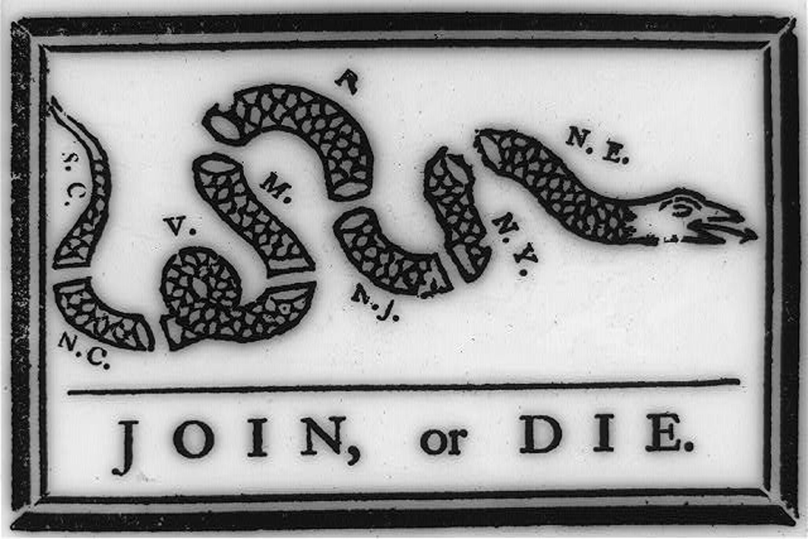
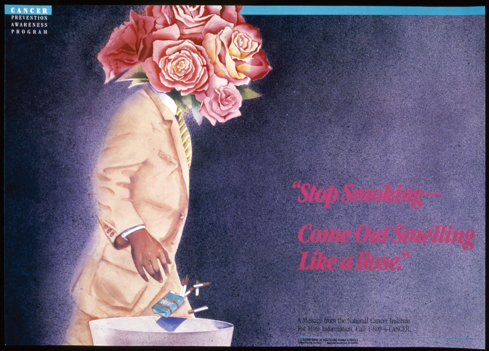

J. K. Rowling’s Harry Potter books about a young boy’s education as a wizard caused many parents—at least initially—to be somewhat wary. When they received an email warning them about the content of books, some of these parents had their fears justified. It seemed Rowling, the author of the books, was a Satan worshiper! According to the email, Rowling said the following:
“I think it’s absolute rubbish to protest children’s books on the grounds that they are luring children to Satan,” Rowling told a London Times reporter in a July 17 interview. “People should be praising them for that! These books guide children to an understanding that the weak, idiotic Son Of God is a living hoax who will be humiliated when the rain of fire comes … while we, his faithful servants, laugh and cavort in victory.”Barbara Mikkelson and David Mikkelson, “Harry Potter,” Snopes.com, May 30, 2008, http://www.snopes.com/humor/iftrue/potter.asp.
Figure 2.1
Web publication WorldNetDaily posted an article at about the same time that used similar quotes, provoking a number of concerned letters and emails to the London Times. Both outlets, however, had quoted from the same source: the satirical newspaper The Onion. The original article was an intentially over-the-top satire of the Harry Potter phenomenon. In typical Onion fashion, the article included absurd, fake quotes from 6-year-old Satanists reported in a straightforward style. Unbelievably, both the email and the WorldNetDaily article quoted The Onion article apparently without realizing the article was a parody.Barbara Mikkelson and David Mikkelson, “Harry Potter,” Snopes.com, May 30, 2008, http://www.snopes.com/humor/iftrue/potter.asp.
This example of a rumor gone wild is a remarkable, if bizarre, example of how people worry about media effects. On the surface, the email typifies some people’s fears of the media’s influence on children. This fear reflects the ways some parents process new-media information and react to the media’s influence on the lives of children and teens. The concerns about one medium did not, however, stop the author of the email from using another medium to spread a false rumor. The concerned parents who believed the email trusted it because it was a form of media that validated their own preconceptions.
Ironically enough, The Onion article itself addressed such overblown fears. By satirizing the sometimes-hysterical concerns of parents in such a convincing reporting style, the article positioned itself as knowledgeable and comfortable within the framework of competing media claims. The article was, in essence, predicated on the idea that the readers of The Onion are savvy enough to understand media messages and that they have no reason to fear the media because they understand it.
Yet the rumor also validates concerns about media’s effects on culture. By quoting from an unsourced article that was read without regard for its context, the emailer and the WorldNetDaily writer presented the kind of woeful scholarship that online media has enabled. The email and its underlying narrative illustrate the fear that new forms of media can be used more readily than traditional media as tools for unfounded propaganda and biased punditry.
The story provides an intriguing introduction to the various ways media messages are created and consumed and the widespread concern over media effects. As a constant presence in modern life, media serve numerous functions and send seemingly unlimited messages. Studying the possible effects of media provides a crucial perspective on modern culture.
When media consumers think of media messages, they may think of televised public service announcements or political advertisements. These obvious examples provide a venue for the transfer of a message through a medium, whether that message is a plea for fire safety or the statement of a political position. But what about more abstract political advertisements that simply show the logo of a candidate and a few simple words? Media messages can range from overt statements to vague expressions of cultural values.
Disagreements over the content of media messages certainly exist. Consider the common allegations of political bias against various news organizations. Accusations of hidden messages or agenda-driven content have always been an issue in the media, but as the presence of media grows, the debate concerning media messages increases. This dialogue is an important one; after all, mass media have long been used to persuade. Many modern persuasive techniques stem from the use of media as a propaganda tool. The role of propaganda and persuasion in the mass media is a good place to start when considering various types of media effects.
Encyclopedia Britannica defines propaganda simply as the “manipulation of information to influence public opinion.”Britannica Concise Encyclopedia, s.v. “Propaganda.” This definition works well for this discussion because the study and use of propaganda has had an enormous influence on the role of persuasion in modern mass media. In his book The Creation of the Media, Paul Starr argues that the United States, as a liberal democracy, has favored employing an independent press as a public guardian, thus putting the media in an inherently political position.Paul Starr, Creation of the Media (New York: Basic Books, 2004), 394–395. The United States—in contrast to other nations where media are held in check—has encouraged an independent commercial press and thus given the powers of propaganda and persuasion to the public.Paul Starr, Creation of the Media (New York: Basic Books, 2004), 394–395.
Figure 2.2
Benjamin Franklin used a powerful image of a severed snake to emphasize the importance of the colonies joining together during the American Revolution.
Like any type of communication, propaganda is not inherently good or bad. Whether propaganda has a positive or negative effect on society and culture depends on the motivations of those who use it and the understandings of those who receive it. People promoting movements as wide-ranging as Christianity, the American Revolution, and the communist revolutions of the 20th century have all used propaganda to disseminate their messages.Garth S. Jowett and Victoria O’Donnell, Propaganda and Persuasion (Thousand Oaks, CA: Sage, 2006), 60–61. Newspapers and pamphlets that glorified the sacrifices at Lexington and Concord and trumpeted the victories of George Washington’s army greatly aided the American Revolution. For example, Benjamin Franklin’s famous illustration of a severed snake with the caption “Join, or Die” serves as an early testament to the power and use of print propaganda.Garth S. Jowett and Victoria O’Donnell, Propaganda and Persuasion (Thousand Oaks, CA: Sage, 2006), 80–81.
As you will learn in Chapter 4 "Newspapers", the penny press made newspapers accessible to a mass audience and became a force for social cohesion during the 1830s.Garth S. Jowett and Victoria O’Donnell, Propaganda and Persuasion (Thousand Oaks, CA: Sage, 2006), 95–96. Magazines adopted a similar format later in the 19th century, and print media’s political and social power rose. In an infamous example of the new power of print media, some newspapers encouraged the Spanish-American War of 1898 by fabricating stories of Spanish atrocities and sabotage.Garth S. Jowett and Victoria O’Donnell, Propaganda and Persuasion (Thousand Oaks, CA: Sage, 2006), 103–104. For example, after the USS Maine sunk off the coast of Havana, Cuba, some newspapers blamed the Spanish—even though there was no evidence—fueling the public’s desire for war with Spain.
The present-day, pejorative connotation of propaganda recalls the utilization of mass media by World War I–era governments to motivate the citizenry of many countries to go to war. Some media outlets characterized that war as a global fight between Anglo civilization and Prussian barbarianism. Although some of those fighting the war had little understanding of the political motivations behind it, wartime propaganda convinced them to enlist.Mark Crispin Miller, introduction to Propaganda, by Edward Bernays (Brooklyn, NY: IG Publishing, 2005), 11. As you will read in Chapter 12 "Advertising and Public Relations", World War I legitimized the advertising profession in the minds of government and corporate leaders because its techniques were useful in patriotic propaganda campaigns. Corporations quickly adapted to this development and created an advertising boom in the 1920s by using World War I propaganda techniques to sell products.Mark Crispin Miller, introduction to Propaganda, by Edward Bernays (Brooklyn, NY: IG Publishing, 2005), 12.
In modern society, the persuasive power of the mass media is well known. In the years after 9/11, there were multiple reports of the death of Osama bin Laden; people desperately wanted to believe he was killed. In reality, he was killed in 2011. Governments, corporations, nonprofit organizations, and political campaigns rely on both new and old media to create messages and to send them to the general public. During and since the 2008 Presidential election, there has been constant scrutiny over Barack Obama’s birthplace and citizenship; the reports are discredited, but the questions resurface. The comparatively unregulated nature of U.S. media has made, for better or worse, a society in which the tools of public persuasion are available to everyone.
Although the mass media send messages created specifically for public consumption, they also convey messages that are not properly defined as propaganda or persuasion. Some argue that these messages influence behavior, especially the behavior of young people.Alexandra Beatty, “Studying Media Effects on Children and Youth: Improving Methods and Measures, Workshop Summary,” March 2–3, 2006, The National Academies Press, http://www.nap.edu/openbook.php?record_id=11706; “Media Influence on Youth,” Crisis Connection, http://www.crisisconnectioninc.org/teens/media_influence_on_youth.htm. Violent, sexual, and compulsive behaviors have been linked to media consumption and thus raise important questions about the effects of media on culture.
On April 20, 1999, students Eric Harris and Dylan Klebold entered their Denver-area high school, Columbine High School, armed with semiautomatic weapons and explosives. Over the next few hours, the pair killed 12 classmates and one faculty member before committing suicide.Gina Lamb, “Columbine High School,” Times Topics, New York Times, April 17, 2008, http://topics.nytimes.com/topics/reference/timestopics/organizations/c/columbine_high_school/index.html. The tragedy and its aftermath captured national attention, and in the weeks following the Columbine High School shootings, politicians and pundits worked to assign blame. Their targets ranged from the makers of the first-person shooter video game Doom to the Hollywood studios responsible for The Matrix.Tom Brook, “Is Hollywood to Blame?” BBC News, April 23, 1999, http://news.bbc.co.uk/2/hi/special_report/1999/03/99/tom_brook/326529.stm.
However, in the years since the massacre, research has revealed that the perpetrators were actually attempting a terrorist bombing rather than a first-person shooter style rampage.Greg Toppo, “10 Years Later, the Real Story Behind Columbine,” USA Today, April 13, 2009, http://www.usatoday.com/news/nation/2009-04-13-columbine-myths_N.htm. But did violent video games so desensitize the two teenagers to violence that they could contemplate such a plan? Did movies that glorify violent solutions create a culture that would encourage people to consider such methods? Because modern culture is so immersed in media, the issue becomes a particularly complex one, and it can be difficult to understand the types of effects that violent media produce.
A number of studies have verified certain connections between violent video games and violent behavior in young people. For example, studies have found that some young people who play violent video games reported angry thoughts and aggressive feelings immediately after playing. Other studies, such as one conducted by Dr. Chris A. Anderson and colleagues, point to correlations between the amount of time spent playing violent video games and increased incidence of aggression.Craig A. Anderson and others, “The Influence of Media Violence on Youth,” Psychological Science in the Public Interest 4, no. 3 (2003): 81–110. However, these studies do not prove that video games cause violence. Video game defenders argue that violent people can be drawn to violent games, and they point to lower overall incidence of youth violence in recent years compared to past decades.Jill U. Adams, “Effects of Violent Video Games,” Los Angeles Times, May 3, 2010, http://articles.latimes.com/2010/may/03/health/la-he-closer-20100503. Other researchers admit that individuals prone to violent acts are indeed drawn to violent media; however, they claim that by keeping these individuals in a movie theater or at home, violent media have actually contributed to a reduction in violent social acts.Peter Goodman, “Violent Films May Cut Real Crime, Study Finds,” New York Times, January 7, 2008, http://www.nytimes.com/2008/01/07/technology/07iht-violence.4.9058958.html.
Figure 2.3
The 1999 Columbine High School shooting led to greater debate and criticism over violent video games.
Source: Used with permission from Getty Images.
Whether violent media actually cause violence remains unknown, but unquestionably these forms of media send an emotional message to which individuals respond. Media messages are not limited to overt statements; they can also use emotions, such as fear, love, happiness, and depression. These emotional reactions partially account for the intense power of media in our culture.
In many types of media, sexual content—and its strong emotional message—can be prolific. A recent study by researchers at the University of North Carolina titled “Sexy Media Matter: Exposure to Sexual Content in Music, Movies, Television, and Magazines Predicts Black and White Adolescents’ Sexual Behavior” found that young people with heavy exposure to sexually themed media ranging from music to movies are twice as likely to engage in early sexual behavior as young people with light exposure. Although the study does not prove a conclusive link between sexual behavior and sexually oriented media, researchers concluded that media acted as an influential source of information about sex for these youth groups.Kathleen Doheny, “Mass Media May Prompt Kids to Try Sex: Study,” Health Scout, April 3, 2006, http://www.healthscout.com/news/1/531862/main.html. Researcher Jane Brown thinks part of the reason children watch sexual content is related to puberty and their desire to learn about sex. While many parents are hesitant to discuss sex with their children, the media can act like a “super peer,” providing information in movies, television, music, and magazines.Kathleen Doheny, “Mass Media May Prompt Kids to Try Sex: Study,” Health Scout, April 3, 2006, http://www.healthscout.com/news/1/531862/main.html. Reality series, such as Teen Mom and 16 and Pregnant, are prevalent on the popular MTV station. We will explore in greater detail the impact of sexual content in the media in Chapter 14 "Ethics of Mass Media".
The media sends messages that reinforce cultural values. These values are perhaps most visible in celebrities and the roles that they adopt. Actors such as Jake Gyllenhaal and Scarlett Johansson have come to represent aspects of masculinity and femininity that have been adopted into mainstream culture in the last 10 years. In recent years, baseball player Derek Jeter appeared in television, film, magazines, and advertising campaigns as a model of athleticism and willpower. Singers such as Bono of U2 have represented a sense of freedom and rebellion against mainstream culture.
Although many consider celebrity culture superficial and a poor reflection of a country’s values, not all celebrities are simply entertainers. Civil rights leaders, social reformers, and other famous public figures have come to represent important cultural accomplishments and advancements through their representations in the media. When images of Abraham Lincoln or Lady Gaga appear in the media, they resonate with cultural and historical themes greatly separated from mere fame.
Celebrities can also reinforce cultural stereotypesAn image or character that generalizes and oversimplifies a particular group of people. that marginalize certain groups. Television and magazines from the mid-20th century often portrayed women in a submissive, domestic role, both reflecting and reinforcing the cultural limitations imposed on women at the time. Advertising icons developed during the early 20th century, such as Aunt Jemima and the Cream of Wheat chef, similarly reflected and reinforced a submissive, domestic servant role for African Americans. Other famous stereotypes—such as the Lone Ranger’s Native American sidekick, Tonto, or Mickey Rooney’s Mr. Yunioshi role in Breakfast at Tiffany’s—also reinforced American preconceptions about ethnic predispositions and capabilities.
Figure 2.4

Tonto from The Lone Ranger reinforced cultural stereotypes about Native Americans. Do you think this type of characterization would be acceptable in modern television?
Source: Used with permission from Getty Images.
Whether actual or fictional, celebrities and their assumed roles send a number of different messages about cultural values. They can promote courageous truth telling, hide and prolong social problems, or provide a concrete example of an abstract cultural value.
New media—the Internet and other digital forms of communication—have had large effects on society. This communication and information revolution has created a great deal of anguish about digital literacy and other issues that inevitably accompany such a social change. In his book on technology and communication, A Better Pencil, Dennis Baron discusses this issue:
For Plato, only speech, not writing, can produce the kind of back-and-forth—the dialogue—that’s needed to get at the truth … the text, orphaned by its author once it’s on the page, cannot defend itself against misreading…. These are strong arguments, but even in Plato’s day they had been rendered moot by the success of the written word. Although the literacy rate in classical Greece was well below 10 percent, writing had become an important feature of the culture. People had learned to trust and use certain kinds of writing—legal texts, public inscriptions, business documents, personal letters, and even literature—and as they did so, they realized that writing, on closer examination, turned out to be neither more nor less reliable or ambiguous than the spoken word, and it was just as real.Dennis Baron, A Better Pencil: Readers, Writers, and the Digital Revolution (New York: Oxford University Press, 2009), 5.
Baron makes the point that all communication revolutions have created upheavals and have changed the standards of literacy and communication. This historical perspective gives a positive interpretation to some otherwise ominous developments in communication and culture.
The Internet has made an incredible amount of new information available to the general public. Both this wealth of information and the ways people process it are having an enormous effect on culture. New perceptions of information have emerged as access to it grows. Older-media consumption habits required in-depth processing of information through a particular form of media. For example, consumers read, watched, or viewed a news report in its entirety, typically within the context of a news publication or program. Fiction appeared in book or magazine form.
Today, information is easier to access, thus more likely to traverse several forms of media. An individual may read an article on a news website and then forward part of it to a friend. That person in turn describes it to a coworker without having seen the original context. The ready availability of information through search engines may explain how a clearly satirical Onion article on the Harry Potter phenomenon came to be taken as fact. Increasingly, media outlets cater to this habit of searching for specific bits of information devoid of context. Information that will attract the most attention is often featured at the expense of more important stories. At one point on March 11, 2010, for example, The Washington Post website’s most popular story was “Maintaining a Sex Life.”Michiko Kakutani, “Texts Without Context,” New York Times, March 17, 2010, http://www.nytimes.com/2010/03/21/books/21mash.html.
Another important development in the media’s approach to information is its increasing subjectivity. Some analysts have used the term cyberbalkanization to describe the way media consumers filter information. Balkanization is an allusion to the political fragmentation of Eastern Europe’s Balkan states following World War I, when the Ottoman Empire disintegrated into a number of ethnic and political fragments. Customized news feeds allow individuals to receive only the kinds of news and information they want and thus block out sources that report unwanted stories or perspectives. Many cultural critics have pointed to this kind of information filtering as the source of increasing political division and resulting loss of civic discourse. When media consumers hear only the information they want to, the common ground of public discourse that stems from general agreement on certain principles inevitably grows smaller.Michiko Kakutani, “Texts Without Context,” New York Times, March 17, 2010, http://www.nytimes.com/2010/03/21/books/21mash.html.
On one hand, the growth of the Internet as the primary information source exposes the public to increased levels of text, thereby increasing overall literacy. Indeed, written text is essential to the Internet: Web content is overwhelmingly text-based, and successful participation in Internet culture through the use of blogs, forums, or a personal website requires a degree of textual literacy that is not necessary for engagement in television, music, or movies.
Critics of Internet literacy, however, describe the majority of forum and blog posts as subliterate and argue that the Internet has replaced the printed newspapers and books that actually raised the standards of literacy. One nuanced look at the Internet’s effect on the way a culture processes and perceives information states that literacy will not simply increase or decrease but will change qualitatively.Suzanne Choney, “Internet Making Our Brains Different, Not Dumb,” MSNBC, Feb. 19, 2010, http://www.msnbc.msn.com/id/35464896/ns/technology_and_science-tech_and_gadgets/. Perhaps the standards for literacy will shift to an emphasis on simplicity and directness, for example, rather than on elaborate uses of language.
Figure 2.5
President Barack Obama fired General Stanley McChrystal after a controversial Rolling Stone story in which McChrystal spoke poorly of the Obama administration was leaked on the Internet.
Certainly, the Internet has affected the way that cultures consume news. The public expects to receive information quickly, and news outlets respond rapidly to breaking stories. On Monday, June 21, 2010, for example, a spokesperson for Rolling Stone magazine first released quotes from a story featuring General Stanley McChrystal publicly criticizing members of the Obama administration on matters of foreign policy. By that evening, the story had become national news despite the fact Rolling Stone didn’t even post it to its website until Tuesday morning—some time after several news outlets had already posted the entire story on their own sites. Later that same day, McChrystal issued a public apology, and on Wednesday flew to Washington where President Barack Obama fired him. The printed Rolling Stone issue featuring the article hit newsstands Friday, two days after McChrystal had been replaced.Jim Timpane, “New Media Too Speedy to Outflank,” Philly.com, June 24, 2010, http://www.philly.com/philly/entertainment/20100624_New_media_too_speedy_to_outflank.html.
As we have seen, the term convergence can hold several different meanings. In Convergence Culture: Where Old and New Media Collide, Henry Jenkins offers a useful definition of convergence as it applies to new media:
“By convergence, I mean the flow of content across multiple media platforms, the cooperation between multiple media industries, and the migratory behavior of media audiences who will go almost anywhere in search of the kinds of entertainment experiences they want.”Henry Jenkins, Convergence Culture: Where Old and New Media Collide (New York: New York University Press, 2006), 2.
A self-produced video on the YouTube website that gains enormous popularity and thus receives the attention of a news outlet is a good example of this migration of both content and audiences. Consider this flow: The video appears and gains notoriety, so a news outlet broadcasts a story about the video, which in turn increases its popularity on YouTube. This migration works in a number of ways. Humorous or poignant excerpts from television or radio broadcasts are often posted on social media sites and blogs, where they gain popularity and are seen by more people than had seen the original broadcast.
Thanks to new media, consumers now view all types of media as participatory. For example, the massively popular talent show American Idol combines an older-media format—television—with modern media consumption patterns by allowing the home audience to vote for a favorite contestant. However, American Idol segments regularly appear on YouTube and other websites, where people who may never have seen the show comment on and dissect them. Phone companies report a regular increase in phone traffic following the show, presumably caused by viewers calling in to cast their votes or simply to discuss the program with friends and family. As a result, more people are exposed to the themes, principles, and culture of American Idol than the number of people who actually watch the show.Henry Jenkins, Convergence Culture: Where Old and New Media Collide (New York: New York University Press, 2006), 83.
New media have encouraged greater personal participation in media as a whole. Although the long-term cultural consequences of this shift cannot yet be assessed, the development is undeniably a novel one. As audiences become more adept at navigating media, this trend will undoubtedly increase.
Figure 2.6

In 2001, high school student Dino Ignacio created a collage of Sesame Street character Bert with terrorist Osama bin Laden as part of a series for his website. Called “Bert Is Evil,” the series featured the puppet engaged in a variety of illicit activities. A Bangladesh-based publisher looking for images of bin Laden found the collage on the Internet and used it in an anti-American protest poster, presumably without knowledge of who Bert was. This ended up in a CNN report on anti-American protests, and public outrage over the use of Bert made Ignacio’s original site a much-imitated cult phenomenon.
The voyage of this collage from a high school student’s website to an anti-American protest poster in the Middle East to a cable television news network and finally back to the Internet provides a good illustration of the ways in which content migrates across media platforms in the modern era. As the collage crossed geographic and cultural boundaries, it grew on both corporate and grassroots media. While this is not the norm for media content, the fact that such a phenomenon is possible illustrates the new directions in which media is headed.Henry Jenkins, Convergence Culture: Where Old and New Media Collide (New York: New York University Press, 2006), 1–2.
Explain how the media has affected culture. Be sure to discuss the following topics and to provide examples of each.
Early media studies focused on the use of mass media in propaganda and persuasion. However, journalists and researchers soon looked to behavioral sciences to help figure out the possible effect of mass media and communications on society. Scholars have developed many different approaches and theories to figure this out. Other scholars challenge whether research can ever untangle the relationship of media and effects. You can refer to these theories as you consider for yourself the media’s effect on individuals and culture.
In one of the earliest formulations of media effects, widespread fear that mass-media messages could outweigh other stabilizing cultural influences, such as family and community, led to what is known as the direct effects modelA theory that assumes audiences passively accept media messages and react predictably to those messages. of media studies. This model, prevalent in the 1920s and 1930s, assumed that audiences passively accepted media messages and would exhibit predictable reactions in response to those messages. For example, following the radio broadcast of War of the Worlds in 1938 (which was a fictional news report of an alien invasion), some people panicked and believed the story to be true.
The results of the People’s Choice Study challenged this model. Conducted in 1940, the study attempted to gauge the effects of political campaigns on voter choice. Researchers found that voters who consumed the most media had generally already decided for which candidate to vote, while undecided voters generally turned to family and community members to help them decide. The study thus discredited the direct effects model and influenced a host of other media theories.Ralph Hanson, Mass Communication: Living in a Media World (Washington, DC: CQ Press, 2009), 80–81. These theories do not necessarily give an all-encompassing picture of media effects but rather work to illuminate a particular aspect of media influence.
As noted in Chapter 1 "Media and Culture", during the early 1960s, English professor Marshall McLuhan wrote two books that had an enormous effect on the history of media studies. Published in 1962 and 1964, respectively, the Gutenberg Galaxy and Understanding Media both traced the history of media technology and illustrated the ways these innovations had changed both individual behavior and the wider culture. Understanding Media introduced the phrase that McLuhan has become known for: “The medium is the message.” This notion represented a novel take on attitudes toward media—that the media themselves are instrumental in shaping human and cultural experience.
His bold statements about media gained McLuhan a great deal of attention as both his supporters and critics responded to his utopian views about the ways media could transform 20th-century life. McLuhan spoke of a media-inspired “global village” at a time when Cold War paranoia was at its peak and the Vietnam War was a hotly debated subject. Although 1960s-era utopians received these statements positively, social realists found them cause for scorn. Despite—or perhaps because of—these controversies, McLuhan became a pop culture icon, mentioned frequently in the television sketch-comedy program Laugh-In and appearing as himself in Woody Allen’s film Annie Hall.
The Internet and its accompanying cultural revolution have made McLuhan’s bold utopian visions seem like prophecies. Indeed, his work has received a great deal of attention in recent years. Analysis of McLuhan’s work has, interestingly, not changed very much since his works were published. His supporters point to the hopes and achievements of digital technology and the utopian state that such innovations promise. The current critique of McLuhan, however, is a bit more revealing of the state of modern media studies. Media scholars are much more numerous now than they were during the 1960s, and many of these scholars criticize McLuhan’s lack of methodology and theoretical framework.
Despite his lack of scholarly diligence, McLuhan had a great deal of influence on media studies. Professors at Fordham University have formed an association of McLuhan-influenced scholars. McLuhan’s other great achievement is the popularization of the concept of media studies. His work, perhaps ironically, brought the idea of media effects into the public arena and created a new way for the public to consider the influence of media on culture.Alexander Stille, “Marshall McLuhan Is Back From the Dustbin of History; With the Internet, His Ideas Again Seem Ahead of Their Time,” New York Times, October 14, 2000, http://www.nytimes.com/2000/10/14/arts/marshall-mcluhan-back-dustbin-history-with-internet-his-ideas-again-seem-ahead.html.
In contrast to the extreme views of the direct effects model, the agenda-setting theoryA theory stating that the mass media determines the issues the public considers important. of media stated that mass media determine the issues that concern the public rather than the public’s views. Under this theory, the issues that receive the most attention from media become the issues that the public discusses, debates, and demands action on. This means that the media are determining what issues and stories the public thinks about. Therefore, when the media fail to address a particular issue, it becomes marginalized in the minds of the public.Ralph Hanson, Mass Communication: Living in a Media World (Washington, DC: CQ Press, 2009), 92.
When critics claim that a particular media outlet has an agenda, they are drawing on this theory. Agendas can range from a perceived liberal bias in the news media to the propagation of cutthroat capitalist ethics in films. For example, the agenda-setting theory explains such phenomena as the rise of public opinion against smoking. Before the mass media began taking an antismoking stance, smoking was considered a personal health issue. By promoting antismoking sentiments through advertisements, public relations campaigns, and a variety of media outlets, the mass media moved smoking into the public arena, making it a public health issue rather than a personal health issue.James Dearing and Everett Rogers, Agenda-Setting (Thousand Oaks, CA: Sage, 1996), 4. More recently, coverage of natural disasters has been prominent in the news. However, as news coverage wanes, so does the general public’s interest.
Figure 2.7
Through a variety of antismoking campaigns, the health risks of smoking became a public agenda.
Media scholars who specialize in agenda-setting research study the salience, or relative importance, of an issue and then attempt to understand what causes it to be important. The relative salience of an issue determines its place within the public agenda, which in turn influences public policy creation. Agenda-setting research traces public policy from its roots as an agenda through its promotion in the mass media and finally to its final form as a law or policy.James Dearing and Everett Rogers, Agenda-Setting (Thousand Oaks, CA: Sage, 1996), 8.
Practitioners of the uses and gratifications theoryA theory stating that individuals use media to satisfy specific needs or desires. study the ways the public consumes media. This theory states that consumers use the media to satisfy specific needs or desires. For example, you may enjoy watching a show like Dancing With the Stars while simultaneously tweeting about it on Twitter with your friends. Many people use the Internet to seek out entertainment, to find information, to communicate with like-minded individuals, or to pursue self-expression. Each of these uses gratifies a particular need, and the needs determine the way in which media are used. By examining factors of different groups’ media choices, researchers can determine the motivations behind media use.Zizi Papacharissi, “Uses and Gratifications,” in An Integrated Approach to Communication Theory and Research, ed. Don Stacks and Michael Salwen (New York: Routledge, 2009), 137.
A typical uses and gratifications study explores the motives for media consumption and the consequences associated with use of that media. By studying how and why people watch Dancing With the Stars while using Twitter, scholars suggest people are using the Internet as way to be entertained and to connect with friends. Researchers have identified a number of common motives for media consumption. These include relaxation, social interaction, entertainment, arousal, escape, and a host of interpersonal and social needs. By examining the motives behind the consumption of a particular form of media, researchers can better understand both the reasons for that medium’s popularity and the roles that the medium fills in society. A study of the motives behind a given user’s interaction with Facebook, for example, could explain the role Facebook takes in society and the reasons for its appeal.
Uses and gratifications theories of media are often applied to contemporary media issues. The analysis of the relationship between media and violence that you read about in preceding sections exemplifies this. Researchers employed the uses and gratifications theory in this case to reveal a nuanced set of circumstances surrounding violent media consumption, as individuals with aggressive tendencies were drawn to violent media.Zizi Papacharissi, “Uses and Gratifications,” in An Integrated Approach to Communication Theory and Research, ed. Don Stacks and Michael Salwen (New York: Routledge, 2009), 140–143.
Another commonly used media theory, symbolic interactionismA theory stating that the self is derived from and develops through human interaction., states that the self is derived from and develops through human interaction. This means the way you act toward someone or something is based on the meaning you have for a person or thing. To effectively communicate, people use symbols with shared cultural meanings. Symbols can be constructed from just about anything, including material goods, education, or even the way people talk. Consequentially, these symbols are instrumental in the development of the self.
This theory helps media researchers better understand the field because of the important role the media plays in creating and propagating shared symbols. Because of the media’s power, it can construct symbols on its own. By using symbolic interactionist theory, researchers can look at the ways media affects a society’s shared symbols and, in turn, the influence of those symbols on the individual.Cathrine Jansson-Boyd, Consumer Psychology (New York: McGraw-Hill, 2010), 59–62.
One of the ways the media creates and uses cultural symbols to affect an individual’s sense of self is advertising. Advertisers work to give certain products a shared cultural meaning to make them desirable. For example, when you see someone driving a BMW, what do you think about that person? You may assume the person is successful or powerful because of the car he or she is driving. Ownership of luxury automobiles signifies membership in a certain socioeconomic class. Equally, technology company Apple has used advertising and public relations to attempt to become a symbol of innovation and nonconformity. Use of an Apple product, therefore, may have a symbolic meaning and may send a particular message about the product’s owner.
Media also propagate other noncommercial symbols. National and state flags, religious images, and celebrities gain shared symbolic meanings through their representation in the media.
The spiral of silenceA theory stating that individuals who hold a minority opinion silence themselves to prevent social isolation. theory, which states that those who hold a minority opinion silence themselves to prevent social isolation, explains the role of mass media in the formation and maintenance of dominant opinions. As minority opinions are silenced, the illusion of consensus grows, and so does social pressure to adopt the dominant position. This creates a self-propagating loop in which minority voices are reduced to a minimum and perceived popular opinion sides wholly with the majority opinion. For example, prior to and during World War II, many Germans opposed Adolf Hitler and his policies; however, they kept their opposition silent out of fear of isolation and stigma.
Because the media is one of the most important gauges of public opinion, this theory is often used to explain the interaction between media and public opinion. According to the spiral of silence theory, if the media propagate a particular opinion, then that opinion will effectively silence opposing opinions through an illusion of consensus. This theory relates especially to public polling and its use in the media.Zizi Papacharissi, “Uses and Gratifications,” in An Integrated Approach to Communication Theory and Research, ed. Don Stacks and Michael Salwen (New York: Routledge, 2009), 153–154.
The media logicA theory stating that common media formats and styles serve as a way of perceiving the world. theory states that common media formats and styles serve as a means of perceiving the world. Today, the deep rooting of media in the cultural conciousness means that media consumers need engage for only a few moments with a particular television program to understand that it is a news show, a comedy, or a reality show. The pervasiveness of these formats means that our culture uses the style and content of these shows as ways to interpret reality. For example, think about a TV news program that frequently shows heated debates between opposing sides on public policy issues. This style of debate has become a template for handling disagreement to those who consistently watch this type of program.
Media logic affects institutions as well as individuals. The modern televangelist has evolved from the adoption of television-style promotion by religious figures, while the utilization of television in political campaigns has led candidates to consider their physical image as an important part of a campaign.David Altheide and Robert Snow, Media Worlds in the Postjournalism Era (New York: Walter de Gruyter, 1991), 9–11.
The cultivation analysisA theory stating that heavy exposure to media cultivates an illusory perception of reality. theory states that heavy exposure to media causes individuals to develop—or cultivate—an illusory perception of reality based on the most repetitive and consistent messages of a particular medium. This theory most commonly applies to analyses of television because of that medium’s uniquely pervasive nature. Under this theory, someone who watches a great deal of television may form a picture of reality that does not correspond to actual life. Televised violent acts, whether those reported on news programs or portrayed on television dramas, for example, greatly outnumber violent acts that most people encounter in their daily lives. Thus, an individual who watches a great deal of television may come to view the world as more violent and dangerous than it actually is.
Cultivation analysis projects involve a number of different areas for research, such as the differences in perception between heavy and light users of media. To apply this theory, the media content that an individual normally watches must be analyzed for various types of messages. Then, researchers must consider the given media consumer’s cultural background of individuals to correctly determine other factors that are involved in his or her perception of reality. For example, the socially stabilizing influences of family and peer groups influence children’s television viewing and the way they process media messages. If an individual’s family or social life plays a major part in her life, the social messages that she receives from these groups may compete with the messages she receives from television.
Media theories have a variety of uses and applications. Research one of the following topics and its effect on culture. Examine the topic using at least two of the approaches discussed in this section. Then, write a one-page essay about the topic you’ve selected.
Media theories provide the framework for approaching questions about media effects ranging from as simple as how 10-year-old boys react to cereal advertisements to as broad as how Internet use affects literacy. Once researchers visualize a project and determine a theoretical framework, they must choose actual research methods. Contemporary research methods are greatly varied and can range from analyzing old newspapers to performing controlled experiments.
Content analysisA research method in which the content of media is analyzed. is a research technique that involves analyzing the content of various forms of media. Through content analysis, researchers hope to understand both the people who created the content and the people who consumed it. A typical content analysis project does not require elaborate experiments. Instead, it simply requires access to the appropriate media to analyze, making this type of research an easier and inexpensive alternative to other forms of research involving complex surveys or human subjects.
Content analysis studies require researchers to define what types of media to study. For example, researchers studying violence in the media would need to decide which types of media to analyze, such as television, and the types of formats to examine, such as children’s cartoons. The researchers would then need to define the terms used in the study; media violence can be classified according to the characters involved in the violence (strangers, family members, or racial groups), the type of violence (self-inflicted, slapstick, or against others), or the context of the violence (revenge, random, or duty-related). These are just a few of the ways that media violence could be studied with content-analysis techniques.Arthur Asa Berger, Media Research Techniques (Thousand Oaks, CA: Sage, 1998), 23–24.
Any study that analyzes older media must employ archival research, which is a type of research that focuses on reviewing historical documents such as old newspapers and past publications. Old local newspapers are often available on microfilm at local libraries or at the newspaper offices. University libraries generally provide access to archives of national publications such as The New York Times or Time; publications can also increasingly be found in online databases or on websites.
Older radio programs are available for free or by paid download through a number of online sources. Many television programs and films have also been made available for free download, or for rent or sale through online distributors. Performing an online search for a particular title will reveal the options available.
Resources such as the Internet Archive (www.archive.org) work to archive a number of media sources. One important role of the Internet Archive is website archiving. Internet archives are invaluable for a study of online media because they store websites that have been deleted or changed. These archives have made it possible for Internet content analyses that would have otherwise been impossible.
Surveys are ubiquitous in modern life. Questionaires record data on anything from political preferences to personal hygiene habits. Media surveys generally take one of the following two forms.
A descriptive survey aims to find the current state of things, such as public opinion or consumer preferences. In media, descriptive surveys establish television and radio ratings by finding the number of people who watch or listen to particular programs. An analytical survey, however, does more than simply document a current situation. Instead, it attempts to find out why a particular situation exists. Researchers pose questions or hypotheses about media and then conduct analytical surveys to answer these questions. Analytical surveys can determine the relationship between different forms of media consumption and the lifestyles and habits of media consumers.
Surveys can employ either open-ended or closed-ended questions. Open-ended questions require the participant to generate answers in their own words, while closed-ended questions force the participant to select an answer from a list. Although open-ended questions allow for a greater variety of answers, the results of closed-ended questions are easier to tabulate. Although surveys are useful in media studies, effective use requires keeping their limitations in mind.
As part of child rearing, parents teach their children about social roles. When parents prepare children to attend school for example, they explain the basics of school rules and what is expected of a student to help the youngsters understand the role of students. Like the role of a character in a play, this role carries specific expectations that differentiate school from home. Adults often play a number of different roles as they navigate between their responsibilities as parents, employees, friends, and citizens. Any individual may play a number of roles depending on his or her specific life choices.
Social role analysisA reseach method that analyzes the roles that individuals take in the media. of the media involves examining various individuals in the media and analyzing the type of role that each plays. Role analysis research can consider the roles of men, women, children, members of a racial minority, or members any other social group in specific types of media. For example, if the role children play in cartoons is consistently different from the role they play in sitcoms, then certain conclusions might be drawn about both of these formats. Analyzing roles used in media allows researchers to gain a better understanding of the messages that the mass media sends.Arthur Asa Berger, Media Research Techniques (Thousand Oaks, CA: Sage, 1998), 45–48.
The depth interviewA research method in which researchers conduct lengthy interviews with test subjects. is an anthropological research tool that is also useful in media studies. Depth interviews take surveys one step further by allowing researchers to directly ask a study participant specific questions to gain a fuller understanding of the participant’s perceptions and experiences. Depth interviews have been used in research projects that follow newspaper reporters to find out their reasons for reporting certain stories and in projects that attempt to understand the motivations for reading romance novels. Depth interviews can provide a deeper understanding of the media consumption habits of particular groups of people.Susanna Hornig Priest, Doing Media Research: An Introduction (Thousand Oaks, CA: Sage, 2010), 16–22.
Rhetorical analysisA research method that examines the styles used in media. involves examining the “styles” used in media and attempting to understand the kinds of messages those styles convey. Media styles refer to form, presentation, composition, use of metaphors, and reasoning structure. Rhetorical analysis reveals the messages not apparent in a strict reading of content. Studies involving rhetorical analysis have focused on media such as advertising to better understand the roles of style and rhetorical devices in media messages.Barrie Gunter, Media Research Methods: Measuring Audiences, Reactions and Impact (Thousand Oaks, CA: Sage, 2000), 89.
Like depth interviews, focus groupsA group interview in which participants respond to questions posed about a certain subject. allow researchers to better understand public responses to media. Unlike a depth interview, however, a focus group allows the participants to establish a group dynamic that more closely resembles that of normal media consumption. In media studies, researchers can employ focus groups to judge the reactions of a group to specific media styles and to content. This can be a valuable means of understanding the reasons for consuming specific types of media.
Figure 2.8

Focus groups are effective ways to obtain a group opinion on media.
Media research studies also sometimes use controlled experiments that expose a test group to an experience involving media and measure the effects of that experience. Researchers then compare these measurements to those of a control group that had key elements of the experience removed. For example, reseachers may show one group of children a program with three incidents of cartoon violence and another control group of similar children the same program without the violent incidents. Researchers then ask the children from both groups the same sets of questions, and the results are compared.
In participant observationA research method in which researchers try to become a part of the groups they are studying., researchers try to become part of the group they are studying. Although this technique is typically associated with anthropological studies in which a researcher lives with members of a particular culture to gain a deeper understanding of their values and lives, it is also used in media research.
Media consumption often takes place in groups. Families or friends gather to watch favorite programs, children may watch Saturday morning cartoons with a group of their peers, and adults may host viewing parties for televised sporting events or awards shows. These groups reveal insights into the role of media in the lives of the public. A researcher might join a group that watches football together and stay with the group for an entire season. By becoming a part of the group, the researcher becomes part of the experiment and can reveal important influences of media on culture.Susanna Hornig Priest, Doing Media Research: An Introduction (Thousand Oaks, CA: Sage, 2010), 96–98.
Researchers have studied online role-playing games, such as World of Warcraft, in this manner. These games reveal an interesting aspect of group dynamics: Although participants are not in physical proximity, they function as a group within the game. Researchers are able to study these games by playing them. In the book Digital Culture, Play, and Identity: A World of Warcraft Reader, a group of researchers discussed the results of their participant observation studies. The studies reveal the surprising depth of culture and unwritten rules that exist in the World of Warcraft universe and give important interpretations of why players pursue the game with such dedication.Hilde Corneliussen and Jill Walker Rettberg, “Introduction: ‘Orc ProfessorLFG,’ or Researching in Azeroth,” in Digital Culture, Play, and Identity: A World of Warcraft Reader, ed. Hilde Corneliussen and Jill Walker Rettberg (Cambridge, MA: Massachusetts Institute of Technology, 2008), 6–7.
Media research methods offer a variety of procedures for performing a media study. Each of these methods varies in cost; thus, a project with a lower budget would be prohibited from using some of the more costly methods. Consider a project on teen violence and video game use. Then answer the following short-response questions. Each response should be a minimum of one paragraph.
Important debates over media theory have questioned the foundations and hence the results of media research. Within academia, theories and research can represent an individual’s lifework and livelihood. As a result, issues of tenure and position, rather than issues of truth and objectivity, can sometimes fuel discussion over theories and research.
Although the use of advanced methodologies can resolve many of the questions raised about various theories, the fact remains that the use of these theories in public debate generally follows a broader understanding. For example, if a hypothetical study found that convicted violent offenders had aggressive feelings after playing the video game Mortal Kombat, many would take this as proof that video games cause violent acts without considering other possible explanations. Often, the nuances of these studies are lost when they enter the public arena.
A significant division among media studies theorists is the belief that audiences are passive or active. A passive audienceThe assumption that audiences passively accept the messages that media give them., in the most extreme statement of this position, passively accepts the messages that media send it. An active audienceThe assumption that audiences make informed, rational decisions about media consumption., on the other hand, is fully aware of media messages and makes informed decisions about how to process and interact with media. Newer trends in media studies have attempted to develop a more complex view of media audiences than the active versus passive debate affords, but in the public sphere, this opposition frames many of the debates about media influence.Robert Heath and Jennings Bryant, Human Communication Theory and Research: Concepts, Contexts, and Challenges (Mahwah, NJ: Lawrence Erlbaum Associates, 2000), 385–386.
A number of criticisms have dogged agenda-setting theory. Chief among these is that agenda-setting studies are unable to prove cause and effect; essentially, no one has truly shown that the media agenda sets the public agenda and not the other way around. An agenda-setting study could connect the prevalence of a topic in the media with later changes in public policy and may conclude that the media set this agenda. However, policy makers and lobbyists often conduct public relations efforts to encourage the creation of certain policies. In addition, public concern over issues generates media coverage as well, making it difficult to tell if the media are responding to public desire for coverage of an issue or if they are pushing an issue on their own agenda.Kwamena Kwansah-Aidoo, “Prospects for Agenda-Setting Research in the 21st Century,” in Topical Issues in Communications and Media Research, ed. Kwamena Kwansah-Aidoo (New York: Nova Science Publishers, 2005), 40–41.
The general presuppositions of the uses and gratifications theory have drawn criticism. By assuming that media fulfill a functional purpose in an individual’s life, the uses and gratifications theory implicitly justifies and reaffirms the functional place of media in the public sphere; critics say that people do not always use media to fulfill a function. They ask whether unconscious motivations or social rituals might be at play. Furthermore, because it focuses on personal, psychological aspects of media, the theory cannot question whether media are artificially imposed on an indivdual. Studies involving the uses and gratifications theory are often sound methodologically, but the overall assumptions of the studies are left unquestioned.Lawrence Grossberg and others, Mediamaking: Mass Media in a Popular Culture (Thousand Oaks, CA: Sage, 2006), 266–267.
Although many regard the spiral of silence theory as useful when applying its broadest principles, it is weak when dealing with specifics. For example, the phenomenon of the spiral of silence is most visible in individuals who are fearful of social isolation. Those who are less fearful are less likely to be silent if public opinion turns against them. Nonconformists contradict the claims of the spiral of silence theory.
Critics have also pointed out that the spiral of silence theory relies heavily on the values of various cultural groups. A public opinion trend in favor of gun control may not silence the consensus within National Rifle Association meetings. Every individual is a part of a larger social group with specific values. Although these values may differ from widespread public opinion, individuals need not fear social isolation within their particular social group.John Gastil, Political Communication and Deliberation (Thousand Oaks, CA: Sage, 2008), 61–62.
Critics have faulted cultivation analysis theory for relying too heavily on a broad definition of violence. Detractors argue that because violence means different things to different subgroups and individuals, any claim that a clear message of violence could be understood in the same way by an entire culture is false. This critique would necessarily extend to other studies involving cultivation analysis. Different people understand media messages in varying ways, so broad claims can be problematic. Cultivation analysis is still an important part of media studies, but critics have questioned its unqualified validity as a theory.James Shanahan and Michael Morgan, Television and its Viewers: Cultivation Theory and Research (New York: Cambridge University Press, 1999), 59–60.
Media theories and studies afford a variety of perspectives. When proponents of a particular view employ those theories and studies, however, they are often oversimplified and can result in contradictory claims. In fact, when politicians and others employ media studies to validate a political perspective, this is a common result.
A good example of the ways that media can bolster political opinion is through coverage, which leads to the debate over media biasThe allegation that media consistently favors one political position.. One 1985 study found that journalists were more likely to hold liberal views than were members of the public. Over the years, many have cited this study to support the opinion that the media holds a liberal bias. However, another study found that between the years of 1948 and 1990, 78 percent of newspaper presidential endorsements were for Republicans.Ralph Hanson, Mass Communication: Living in a Media World (Washington, DC: CQ Press, 2009), 101–102.
Media favoritism again became a source of contention during the 2008 presidential race. A random sampling of campaign coverage in the run-up to the election found that 82 percent of stories featured Barack Obama, while only 52 percent discussed John McCain.Chuck Raasch, “Media Bias Aside, Obama’s Trip an Important Test,” USA Today, July 24, 2008, http://www.usatoday.com/news/opinion/columnist/raasch/2008-07-24-newpolitics_N.htm. Allegations that the media favored Obama seemed to bolster the idea of a liberal bias. But other studies belied this belief. Research conducted during the election showed that favorable media coverage of Obama occurred only after his poll numbers rose, hinting that the media were reacting to public opinion rather than attempting to influence it.Reuters, “Despite Republican Complaints, Media Bias Largely Missing From US Campaign: Study,” Canada.com, November 6, 2008, http://www.canada.com/vancouversun/news/story.html?id=97db2fe0-4b4f-4524-b265-57a0e0c3a38f.
Figure 2.9

Allegations of media bias are a recurring theme in political debates.
Decency standards in media have long been an issue, and they continue to change in ways that are not necessarily predictable. Once banned in the United States for obscenity, James Joyce’s Ulysses is now considered a classic of modern literature, while many schools have banned children’s classic Adventures of Huckleberry Finn for its use of ethnic slurs. Because of the regulatory powers that government possesses over the media, decency is also an inherently political issue. As media studies have progressed, they have increasingly appeared in the debates over decency standards. Although media studies cannot prove a word or image is indecent, they can help discern the impact of that word or image and, thus, greatly influence the debate.
Organizations or figures with stated goals often use media studies to support those aims. For example, the Parents Television Council reported on a study that compared the ratio of comments about nonmarital sex to comments about marital sex during the hours of 8 p.m. to 9 p.m. The study employed content analysis to come up with specific figures; however, the Parents Television Council then used those findings to make broad statements, such as “the institution of marriage is regularly mocked and denigrated.”Melissa Rayworth, “TV Decency Standards Challenge Parents,” Cape Cod Times, August 10, 2008, http://www.capecodonline.com/apps/pbcs.dll/article?AID=/20080810/LIFE/808100317. Because content analysis does not analyze the effect on audiences or analyze how material is presented, it does not offer a scientific way to judge whether a comment is mocking and denigrating marriage, so such interpretations are arguably unsupported by the research. For example, researchers performing a content analysis by documenting the amount of sex or violence on television are not analyzing how this content is interpreted by the audience. They are simply noting the number of instances. Equally, partisan groups can use a number of different linguistic turns to make media studies fit their agenda.
Media studies involving violence, pornography, and profanity are inherently politically charged, and politicians have also conducted their own media studies. In 2001, for example, a Senate bill aimed at Internet decency that had little support in Congress came to the floor. One of the sponsoring senators attempted to increase interest by bringing to the Senate floor a file full of some of the most egregious pornographic images he could find on the Internet. The bill passed 84 to 16.Philip Elmer-Dewitt, “On a Screen Near You,” Time, June 24, 2001, http://www.time.com/time/magazine/article/0,9171,1101950703-134361,00.html.
One of the most outspoken critics of violent video games is the now-disbarred lawyer Jack Thompson. Despite questionable use of media research, Thompson has made many claims referencing research. In an interview with CBS News, Thompson stated that “hundreds of studies” existed that proved the link between violent video games and real violence. Later in the interview, he listed increasing school murder statistics as proof of the effects of violent video games.William Vitka, “Gamespeak: Jack Thompson,” GameCore, CBS News, February 25, 2005, http://www.cbsnews.com/stories/2005/02/24/tech/gamecore/main676446.shtml. In light of the media effects theories elucidated in this chapter, Thompson was obviously not being honest about the findings of video game–violence research and was making claims that no media effects scholar could confidently make.
Thompson initiated several lawsuits against Grand Theft Auto video game developer Take 2 Interactive, claiming that the company should be held liable for encouraging violent actions by minors. His lawsuits were thrown out of court, and he eventually came to a settlement with Take 2 Interactive—who had countersued—to drop all litigation.K. C. Jones, “Grand Theft Auto Company Settles With Jack Thompson,” InformationWeek, April 20, 2007, http://www.informationweek.com/news/global-cio/showArticle.jhtml?articleID=199200271. Thompson’s frivolous use of the legal system caused the state of Alabama to revoke his license to practice law in 2005, and, in 2008, the Florida Supreme Court disbarred him for life.Mark Hefflinger, “Controversial Game Lawsuit Attorney Jack Thompson Disbarred,” Digital Media Wire, September 26, 2008, http://www.dmwmedia.com/news/2008/09/26/controversial-game-lawsuit-attorney-jack-thompson-disbarred.
Jack Thompson’s actions may seem extreme, but he represents a common pattern of media study misrepresentation. Pundits, social reformers, and politicians frequently use the results of media studies to support their agenda without regard for accuracy. The use of media research to lend credence to a political opinion is widespread even as the public struggles to understand the effects of new media on culture.
Although media consolidation will be discussed in more depth in later chapters, the topic’s intersection with media studies results deserves a place here. Media consolidation occurs when large media companies buy up smaller media outlets to create giant conglomerates. Some scholars predict that a handful of companies will soon control most of the world’s media. Although government regulation has historically stymied this trend in the United States by prohibiting ownership of a large number of media outlets, the Federal Communications Commission (FCC) has loosened many of the restrictions on large media companies in recent years.
Media studies often prove vital to decisions regarding media consolidation. These studies measure the impact that consolidation has had on the media’s public role and on the content of local media outlets to compare it with that of conglomerate-owned outlets. The findings often vary depending on the group conducting the test. Sometimes tests are ignored entirely.
In 2003, the FCC loosened restrictions on owning multiple media outlets in the same city, citing studies that the agency had developed to weigh the influence of particular media outlets such as newspapers and television stations.Frank Ahrens, “FCC Eases Media Ownership Rules,” Washington Post, June 3, 2003, http://www.washingtonpost.com/ac2/wp-dyn?pagename=article&contentId=A5555-2003Jun2. In 2006, however, reports surfaced that a key study had been discarded during the 2003 decision. The study showed an increase in time allocated for news when TV stations were owned locally, thus raising questions about whether media consolidation was a good thing for local news.Associated Press, “Powell Denies Seeing Media Ownership Study,” MSNBC, September 15, 2006, http://msnbc.msn.com/id/14850729/.
Media studies are often used to support specific opinions, regardless of whether their results justify such a use. Studies are also conducted with predetermined outcomes that support a specific view. With this in mind, answer the following short-response questions. Each response should be a minimum of one paragraph.
Review Questions
Questions for Section 2.1 "Mass Media and Its Messages"
Questions for Section 2.2 "Media Effects Theories"
Questions for Section 2.3 "Methods of Researching Media Effects"
Questions for Section 2.4 "Media Studies Controversies"
Media studies are used in a variety of professions and capacities. These range from university researchers to small-time music groups that want to assess their online presence. A number of online research tools exist that can help organizations and individuals learn more about the effect of media on important issues and topics.
List two or three prospective careers and think of one way that media studies could be beneficial in each. Search for online media research tools that would assist you in a media research project involving your chosen careers. Answer the following questions: